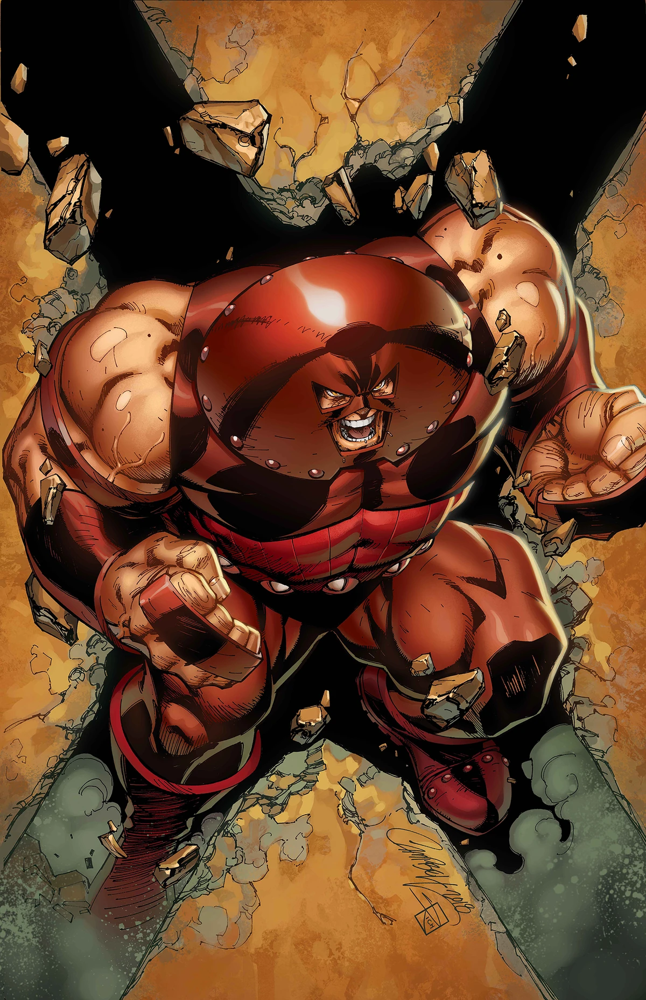

Heroes

Darwin es un mutante nivel omega el cual posee una evolucion reactiva la cual le permite adaptarce a cualquier sistema en el que se encuentre o al peligro que corra como cuando hulk lo golpea pero su evolucion en vez de adptarce al poder de hulk decide huir
Villanos

es un titán imparable que arrasa con todo a su paso. Su piel es impenetrable, su fuerza es descomunal y su resistencia es casi infinita. Empoderado por la gema de Cyttorak, un artefacto místico de inmenso poder, Juggernaut es capaz de devastar ciudades enteras con su paso.